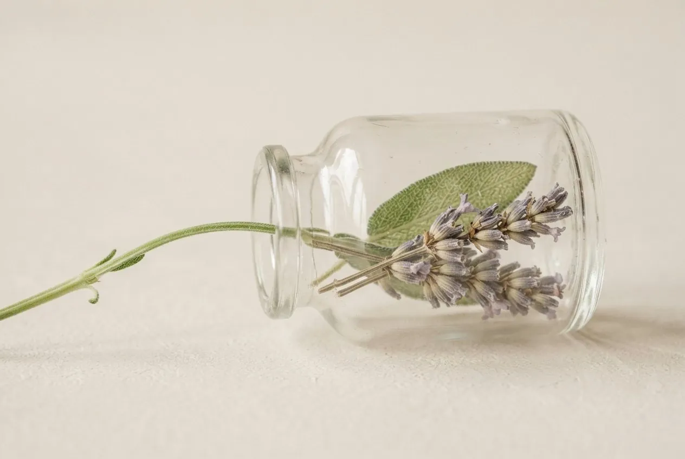

Scent as medicine
what it is, and how it works
A therapy as old as gardens
Aromatherapy is a holistic, immune-supporting complementary therapy. It aids the body's own self-healing, softens anxiety and stress, and works on body, mind and the subtle level at once.
It uses essential oils: highly concentrated aromatic essences extracted from plants, flowers and trees. Because each drop is so concentrated, oils are almost always diluted before use and handled with care. Aesthetic use, the pleasant oils in creams and lotions, is only one small facet; whole-person, holistic aromatherapy is the heart of it.
By Péter Frák, Certified Aromatherapist · IFA member · practising hands-on with essential oils for more than a decade.
From temple smoke to laboratory
The first apothecaries
Chinese, Egyptian, Greek, Roman and Native American cultures used aromatic oils for therapy, hygiene and ritual.
Dioscorides writes it down
Essential oils enter De Materia Medica, the great herbal of the ancient world.
Avicenna's stills
Steam-distilled oils are used as medicine across the Islamic golden age.
Gattefossé's burn
The French chemist René-Maurice Gattefossé burns his hand in his laboratory, plunges it into lavender oil, watches it heal, and gives “aromathérapie” its name.
Valnet at the front
The surgeon Jean Valnet uses essential oils to disinfect soldiers' wounds in the Second World War.
Three ways scent reaches you
Inhalation
Vapours are absorbed through the rich blood supply of the lungs and travel the body for hours.
Touch & massage
During massage, the diluted blend passes through the pores into the bloodstream; warmth and touch carry it deeper.
Memory & emotion
Scent travels the olfactory nerve straight to the limbic system. Lavender invites serotonin and calm; rosemary wakes you; jasmine opens the heart.
What each part of the plant gives
In the subtle reading, the part of the plant an oil comes from shapes the gift it carries.
Flower
reaches the heart and soul, helping it blossom
Leaf
supports the breath, and moments that need one
Root
grounding, digestion, a way back to your roots
Resin
protects and heals, as resin covers a wound
Fruit
joy, the inner child, self-confidence
Seed
latent power, for numbness or stuckness
Bark
an energetic hug around the soul, like cinnamon
Wood
quiet strength and steadiness, like sandalwood's calm
What quality looks like
A true essential oil is labelled pure essential oil, not “aromatherapy oil”, which is usually stretched with cheaper carriers. Real rose, jasmine and neroli are costly to extract; a very cheap bottle is telling you something. Good oils come in dark glass, away from light, and base oils are best cold-pressed and virgin.
Kept dark, cool and closed, most oils live about two years; citrus about one; thick tree oils up to five. Patchouli and myrrh only get better with age.
How to use the blends
In the diffuser
8–12 drops in your room, or during yoga and meditation. Let the space carry the work.
In your palms
1–2 drops, rub together, inhale deeply five times, mornings and evenings. After three weeks, rest for one.
On the skin
Dilute ~3 drops in a little cold-pressed base oil and massage in. Five days on, two days off.
Essential oils are highly concentrated: dilute before use, keep away from children and eyes, and take extra care in pregnancy. Never exceed a 2.5% dilution without professional guidance, and never take oils by mouth without qualified medical supervision. These blends support wellbeing; they do not replace medical care.
Now, the blends themselves
Twenty-three formulas made around feelings, and a bespoke path for a scent that is only yours.
Take the little book of scent
A free ebook by Péter Frák: the essentials of aromatherapy in plain, warm language: the oils, the rituals, the safety, the soul of it. Leave your email and it's yours.
It's on its way to your inbox. With love ☀